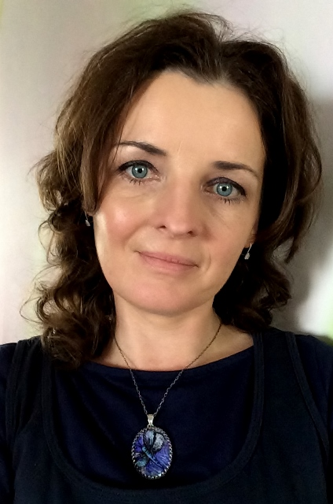

My Theme
Hello, I’m Magdalena Wojnicka a
multidisciplinary Designer:
Architect, Interior, Furniture and Garden Designer based in TriCity.
I have a very long therm experience in Management as:
Construction Manager, Substitute Investor, Project Manager and Investor.
I'm also a very enthusiastic Junior FrontEnd Developer
with big aspirations in this field,
which seems to be the best way of making things on a really big scale.
I'm keen on sketching by hand, handicraft works, learning new technologies, developing my skills in different fields and working for causes that matter.
In my free time, I volunteer in architectural education of kids and teenagers, and I take part in the beautification of the rural area I live in.
My goal is to collaborate with like-minded individuals who do care about aesthetic around us and want to spend their time on giving youth a good example in that field.